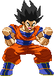

Kamehameha (LV1)
Goku fires a 5-hit energy blast straight forward.
By holding Up, Goku will launch the blast diagonally into the air,
so it can act as an anti-air and is a great way of zoning.
The aerial version will launch diagonally downwards.
Upon hitting the ground, the blast causes a bit of splash damage;
if the opponent comes into contact with this, they still get hit.


Bicycle Kick (LV1)
Goku teleports just above the opponent's current position and then
delivers a hard-hitting overhead kick, which does not take the combo damper into account so it always deals meaty damage.
The impact causes a ground bounce to the opponent.



Kaioken Install (LV1-LV2-LV3)
This Kaioken is an install, or temporary power-up.
For the duration of this Install, all of your Special Moves are powered-up. The Super Kamehameha becomes the Kaioken Kamehameha and besides that, the main crazy gimmick and attraction of this install is that it allows you to cancel any Special/Super into any other Special/Super at the cost of health. The only thing you can't do is cancel a Special or Super into itself. Otherwise, you can go pretty nuts!
There are three versions; a LV1, LV2 and LV3 version. The stronger the version, the longer it lasts and the less health it takes away per Kaio Cancel.
You can't get KOd from your Kaioken cancel self-damage.
While in Kaioken, if you activate another Kaioken, it will level it up if possible and replenish the Kaioken timer, so if you're in LV3 version of kaioken you only need one bar to keep it going on LV3.
For the duration of this Install, all of your Special Moves are powered-up. The Super Kamehameha becomes the Kaioken Kamehameha and besides that, the main crazy gimmick and attraction of this install is that it allows you to cancel any Special/Super into any other Special/Super at the cost of health. The only thing you can't do is cancel a Special or Super into itself. Otherwise, you can go pretty nuts!
There are three versions; a LV1, LV2 and LV3 version. The stronger the version, the longer it lasts and the less health it takes away per Kaio Cancel.
You can't get KOd from your Kaioken cancel self-damage.
While in Kaioken, if you activate another Kaioken, it will level it up if possible and replenish the Kaioken timer, so if you're in LV3 version of kaioken you only need one bar to keep it going on LV3.
Super Kamehameha (LV2)
The second level of the Kamehameha changes the blast into a 20-hit beam if it's launched instantly.
You're able to hold down the Punch button to charge up the attack. The longer you charge, the more hits will be added to the beam.
Once it reaches its maximum, Goku will automatically launch it and it'll be 40 hits at the most.
You can cancel the LV1 Kamehameha (when it hits) into this LV2 version.
This version retains the option to launch it diagonally into the air, but you can't use it in the air.
You can cancel the LV1 Kamehameha (when it hits) into this LV2 version.
This version retains the option to launch it diagonally into the air, but you can't use it in the air.

Meteor Kick (LV2)
Souped-up version the Bicycle Kick; in this version, Goku automatically performs a second teleport attack
as soon as the initial Bicycle Kick connects. The second attack sees Goku teleporting back to the front and delivering a rising kick.
The opponent lands in front of Goku but not in a hard knock down, so you can sweep them off the floor with a crouching Light Kick for example to continue your combo.


Final Meteor Kick (LV3)
For a long time a 'secret' move as it was never detailed in his previous movelists.
But here it is! The Level 3 version of his Bicycle Kick is very high-damage. It follows up the Meteor Kick with yet another
teleporting kick, this time again appearing above the opponent and delivering a downward kick, smashing them to the ground.

Kaioken Assault (LV3)
Goku briefly powers up and then rushes forward. If he touches the enemy, he'll execute a powerful autocombo.
When performed against the Saibaman, or against Piccolo when he has Clones out, perhaps in some other situations as well, Goku will dash and then bounce back, cancelling the attack. Which is a total waste, so better avoid using it against those characters!
Depending if you're on LV1, 2 or 3 of the Hope Bar, Goku will perform a Finisher at the end of the Kaioken Assault:
LV1 - Back Breaker.
LV2 - Final Spirit Bomb.
LV3 - Dragon Fist.
ps. Hold your head UP to the heavens to gain the primal heart of the earth, or DOWN to makai to be blessed by the demon world!
When performed against the Saibaman, or against Piccolo when he has Clones out, perhaps in some other situations as well, Goku will dash and then bounce back, cancelling the attack. Which is a total waste, so better avoid using it against those characters!
Depending if you're on LV1, 2 or 3 of the Hope Bar, Goku will perform a Finisher at the end of the Kaioken Assault:
LV1 - Back Breaker.
LV2 - Final Spirit Bomb.
LV3 - Dragon Fist.
ps. Hold your head UP to the heavens to gain the primal heart of the earth, or DOWN to makai to be blessed by the demon world!